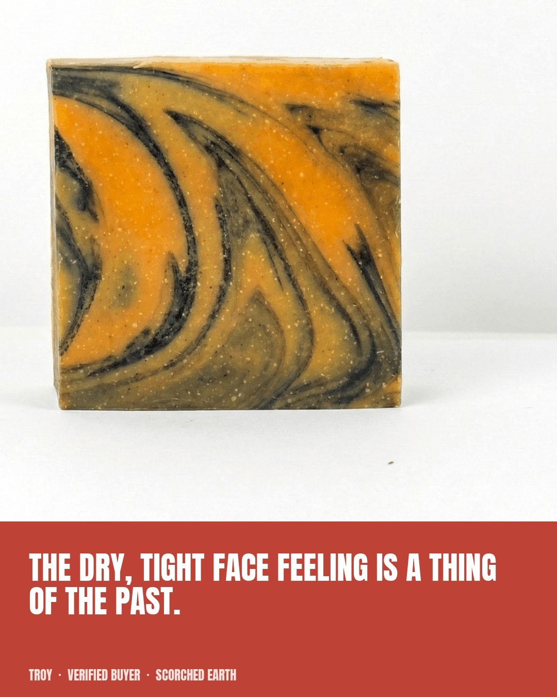
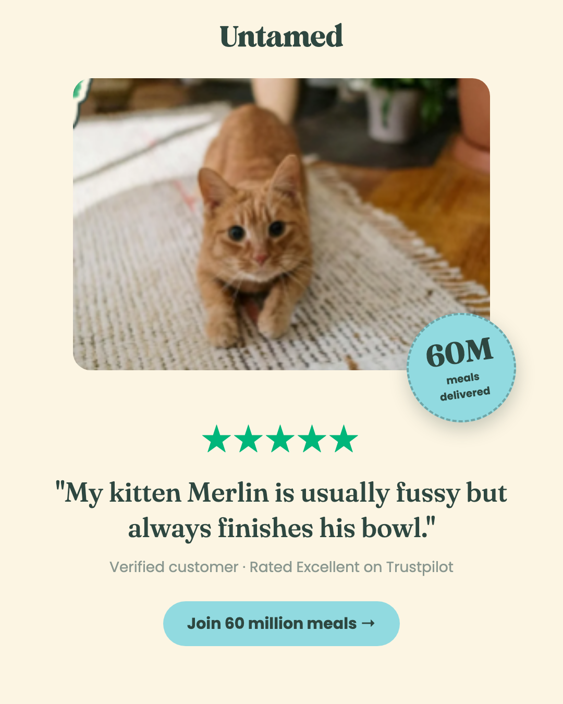
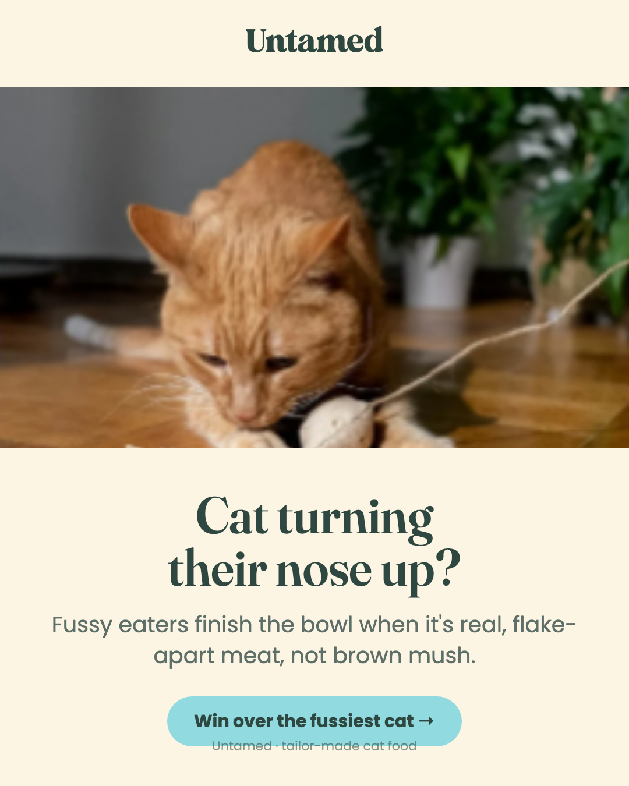
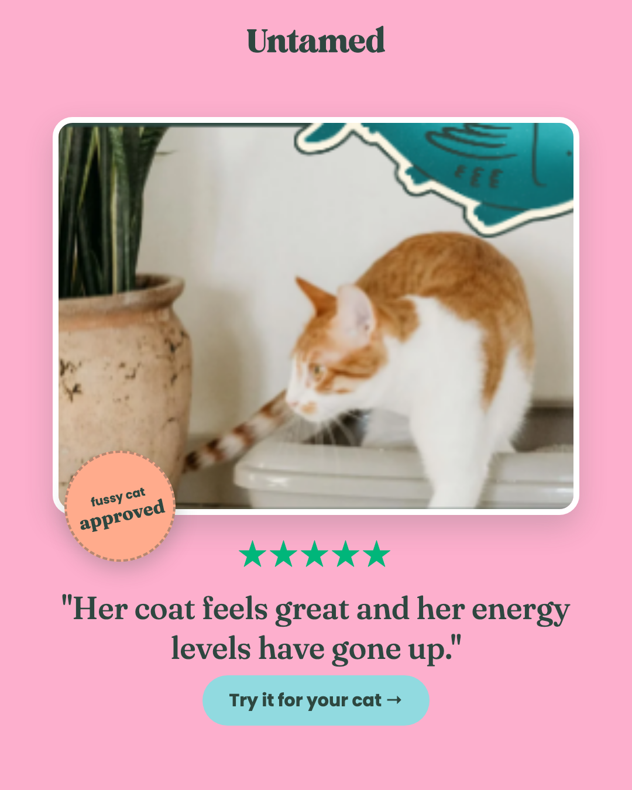
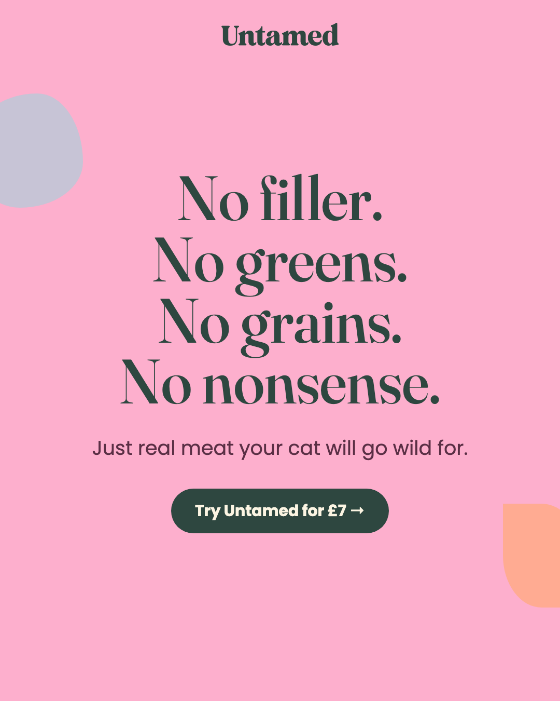
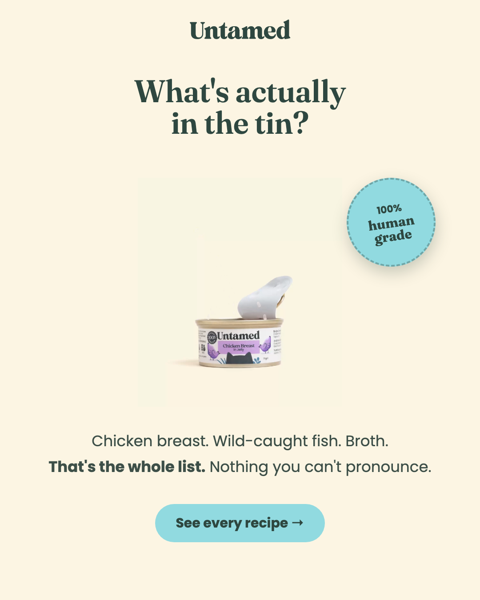

We build static ad creative and landing pages for ecommerce brands out of what you already own — your product photography, and the words your customers wrote about you. Not stock. Not a template with your logo dropped in.
Their photography. Their customers' words, quoted exactly as published. Their typeface and their colours, sampled from their own site — so the ad sits next to what they already run instead of looking like it came from somewhere else.






A batch is not six designs to choose between. It is one idea with a single element changed each time, so the result tells you something you can act on.
Your live ads, your product pages, and your reviews. The angle usually already exists in a customer's sentence — it is just buried where nobody scrolls.
Your photography, your type, your colours. If the result does not belong beside your existing creative in the same feed, it has not been matched properly.
Same idea, one variable moved — the hook, the crop, the quote. That is what makes a batch testable rather than just more files.
Relay is new. The work above is concept work: produced unprompted for named businesses and handed to them directly.
Nothing here was commissioned, invoiced, or run as a paid engagement, and nothing on this site claims a result for Relay — no performance figures, no testimonials, no endorsements, because none have been earned yet. Where a piece quotes a number, a review or a credential, it belongs to that business and comes from their own published material. Each business owns its concepts outright.
We will tell you which of your own reviews we would build the ad around, and why. If there is nothing worth building, we will say that instead.